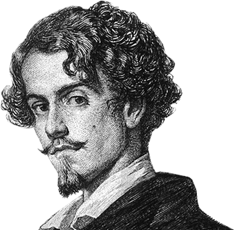

RIMAS DE GUSTABO ADOLFO BÉCQUER

RIMA I
Yo sé un himno gigante y extraño
que anuncia en la noche del alma una aurora,
y estas páginas son de este himno
cadencias que el aire dilata en las sombras.
Yo quisiera escribirlo, del hombre
domando el rebelde, mezquino idioma,
con palabras que fuesen a un tiempo
suspiros y risas, colores y notas.
Pero en vano es luchar; que no hay cifra
capaz de encerrarlo, y apenas, ¡oh hermosa!
Si, teniendo en mis manos las tuyas,
pudiera, al oído, cantártelo a solas.
RIMA II
Saeta que voladora
cruza, arrojada al azar,
sin adivinarse dónde
temblando se clavará;
hoja del árbol seca
arrebata el vendaval,
sin que nadie acierte el surco
donde a caer volverá;
gigante ola que el viento
riza y empuja en el mar,
y rueda y pasa, y no sabe
qué playa buscando va;
luz que en los cercos temblorosos
brilla, próxima a expirar,
ignorándose cuál de ellos
el último brillará;
eso soy yo, que al acaso
cruzo el mundo, sin pensar
de dónde vengo, ni adónde
mis pasos me llevarán.
RIMA III
Sacudimiento extraño
que agita las ideas,
como huracán que empuja
las olas en tropel;
murmullo que en el alma
se eleva y va creciendo
como volcán que sordo
anuncia que va a arder;
deformes siluetas
de seres imposibles;
paisajes que aparecen
como un través de un tul;
colores que fundiéndose
remedan en el aire
los átomos del Iris
que nadan en la luz
ideas sin palabras
palabras sin sentido;
cadencias que no tienen
ni ritmo ni compás;
memorias y deseos
de cosas que no existen;
accesos de alegría
impulsos de llorar;
actividad nerviosa
que no halla en qué emplearse;
sin rienda que lo guíe
caballo volador;
locura que el espíritu
exalta y enardece
embriaguez divina
del genio creador...
¡Tal es la inspiración!
gigante voz que el caos
ordena en el cerebro,
y entre las sombras hace
la luz aparecer;
brillante rienda de oro
que poderosa enfrena
de la exaltada mente
el volador corcel;
hilo de luz que en haces
lo pensamientos ata;
sol que las nubes rompe
y toca en el cénit;
inteligente mano
que en un collar de perlas
consigue las indóciles
palabras reunir;
armonioso ritmo
que con cadencia y número
las fugitivas notas
encierra en el compás;
cincel que el bloque muerde
la estatua moldeando
y la belleza plástica
añade a la ideal;
atmósfera en que giran
con orden las ideas,
cual átomos que agrupa
recóndita atracción;
raudal en cuyas ondas
su sed la fiebre apaga;
oasis que al espíritu
devuelve con vigor...
¡Tal es nuestra razón!
Con ambas siempre en lucha
y de ambas vencedor,
tan sólo el genio puede
a un yugo atar las dos.